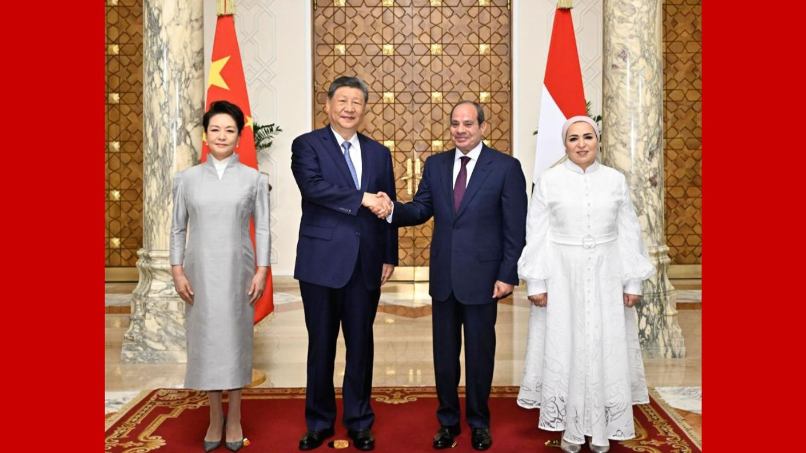
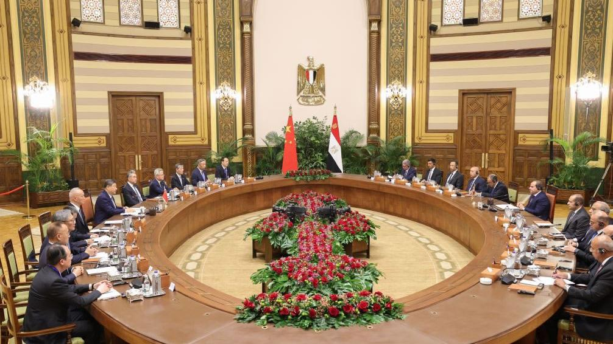
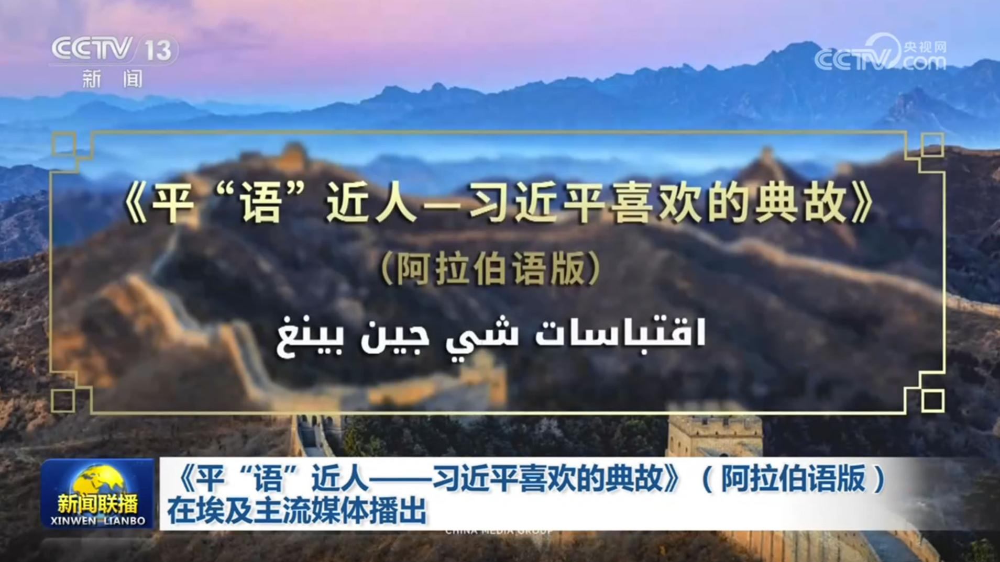
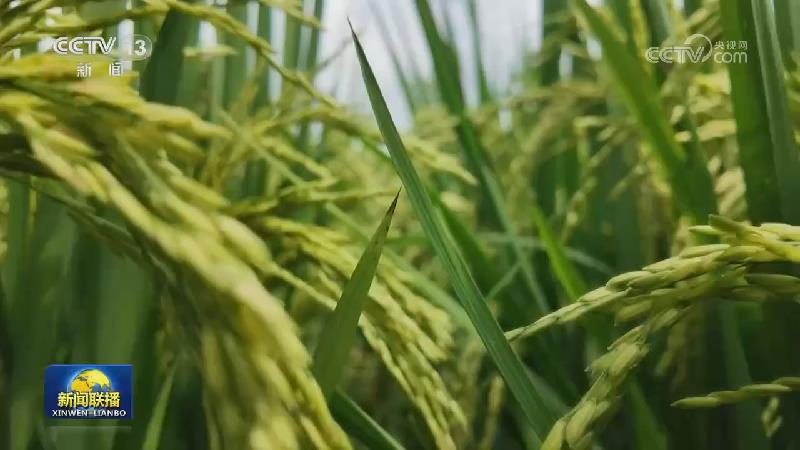
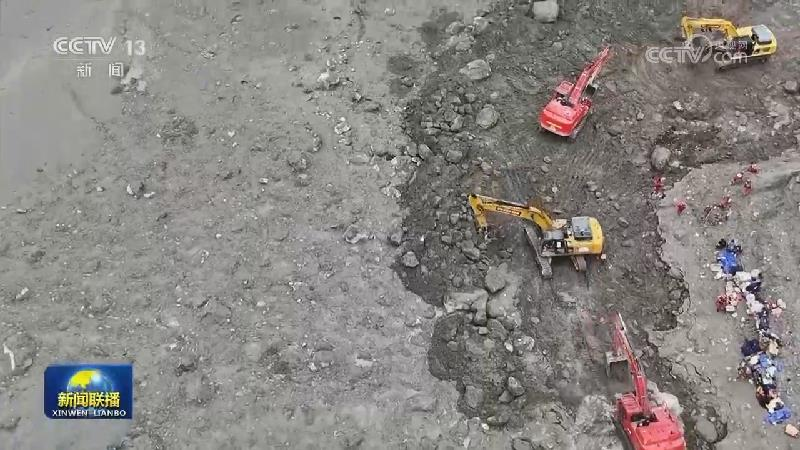
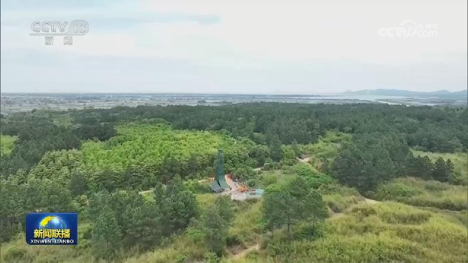
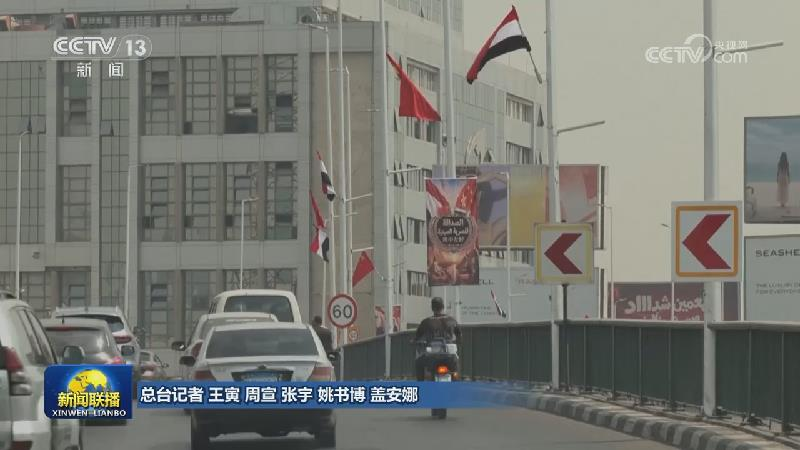

01
习近平抵达开罗对埃及进行国事访问
当地时间9月1日晚，国家主席习近平乘专机抵达开罗，应埃及总统塞西邀请，对埃及进行国事访问。

当地时间9月1日晚，国家主席习近平乘专机抵达开罗，应埃及总统塞西邀请，对埃及进行国事访问。

当地时间9月2日上午，埃及总统塞西在开罗太阳宫举行隆重欢迎仪式，欢迎中国国家主席习近平时隔十年再次对埃及进行国事访问。

当地时间9月2日上午，埃及总统塞西同中国国家主席习近平在开罗太阳宫举行会谈。
9月2日，国家主席习近平向挪威新任国王哈康八世致贺电，对其即位表示祝贺。习近平指出，中挪两国相距虽远，但友谊源远流长。挪威是最早承认并同新中国建交的欧洲国家之一。两国建交72年来，在挪威王室积极推动下，双边关系取得长足进步，各领域合作不断拓展，给两国人民带来实实在在的利益。我高度重视中挪关系发展，愿同哈康八世国王一道努力，书写中挪友好交往新篇章。

由中国中央广播电视总台制作的《平“语”近人——习近平喜欢的典故》（阿拉伯语版）启播活动9月1日在埃及首都开罗举行。埃及总统塞西发贺信表示祝贺。

眼下，全国大部分秋粮正值灌浆期，主产区分类施策，加强田间管理，全力夺取丰收。
中国人民银行公布的上半年信贷投向显示，上半年，聚焦科技创新等领域的贷款增速亮眼，金融资源正以更大力度支持新质生产力发展。

西藏吉隆县泥石流灾害抢险救援工作持续推进。今天（9月2日）上午10时，从吉隆镇通往吉隆口岸的陆路救援通道实现畅通，大型车辆、机械设备通过216国道进入受灾核心区，开展深层次搜救。救援队伍也第一时间优化了搜救方式，救援人员紧随机械作业面，携带生命探测仪等专业设备，搭配搜救犬对巨石堆叠区、建筑掩埋点、河道淤积带开展精细化排查，不放过任何一处掩埋盲区。

国务院安委办联合多部门部署加强渔业安全防范工作

埃及各界人士表示，热烈欢迎习近平主席到访，认为此访将为两国携手实现现代化注入新动力，期待开创埃中关系更加美好的未来。
美国中央司令部1日称，美军当天对伊朗发动新一轮军事打击，目标包括伊朗伊斯兰革命卫队的防空阵地、雷达系统、布雷力量、通信站点等。伊朗阿巴斯港、格什姆岛等多地传出爆炸声。伊朗方面表示，霍尔木兹甘省锡里克地区一处婚礼现场当天遭美军袭击，造成数十位平民伤亡。为回应美军对无辜平民的袭击，伊朗使用攻击型无人机和弹道导弹对位于阿联酋、巴林、伊拉克、约旦、科威特境内的美军基地发动了打击，摧毁多处重要设施。
加总理称加美贸易协议须尊重加主权